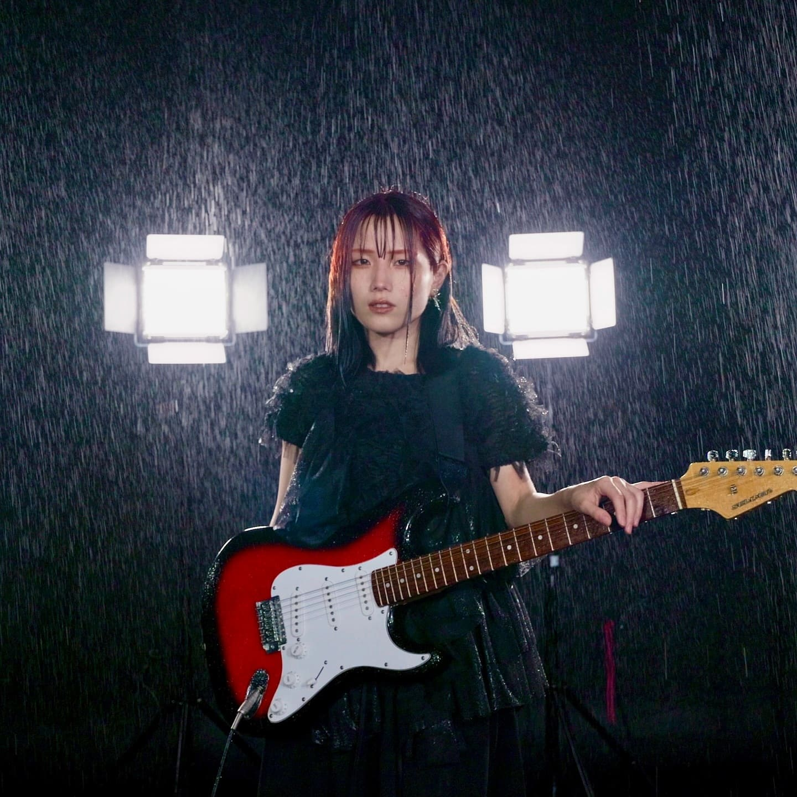

introduction

"自分らしさ"とは何か、"らしさ"をどう見出すのか...
過去や現在の自分とたくさん向き合って完成した曲です
自分の在り方や人との関わり方に悩んでいる人たちに届いてほしいです
素敵な演者様を迎えて、曲の世界観がより豊かになりました
聴いてほしいし、観てほしい...!
何卒よろしくお願いします◎
Instagramより
"自分らしさ"とは何か、"らしさ"をどう見出すのか...
過去や現在の自分とたくさん向き合って完成した曲です
自分の在り方や人との関わり方に悩んでいる人たちに届いてほしいです
素敵な演者様を迎えて、曲の世界観がより豊かになりました
聴いてほしいし、観てほしい...!
何卒よろしくお願いします◎
Instagramより
灯橙あかLyrics & Music Chorus Arrange
長野県出身、大学時代は京都で過ごす。現在Youtube（チャンネル登録6万人）などのSNSを中心に活動中のシンガーソングライター。
”心”にフォーカスした繊細かつ独特な歌詞と、キャッチーで色彩豊かなメロディーが持ち味。作詞作曲はもちろん、編曲、映像編集、イラスト、各サイト運営まで幅広く手掛ける。特徴的な歌声でバラードからポップソングまで悩める人の心情を等身大で歌う。Youtube登録者４０万人越えのクリエイターグループ「WHITEBOX」のリードメンバーとしても活動中。同世代の男女を中心に今、大きな注目を集めている、ネクストブレイク筆頭のシンガーソングライターである。
瀧澤 圭太陸上選手
岡本 夏穂専業主婦
| 生年月日 | 1996年6月10日 |
| 出身地 | 京都府 |
| 血液型 | A型 |
| 身長 | 158cm |
| 靴サイズ | 22.5cm |
| 趣味 | YouTube鑑賞、朝ドラ鑑賞、料理、お酒を飲むこと |
| 特技 | ヴァイオリン（中学生の時に、コンサートミストレスを経験）、陸上ホッケー、アクション特訓中 |
桒波田 聖新社会人
| 生年月日 | 1996年04月19日 |
| 出身地 | |
| 身長 | 173cm |
| 靴サイズ | 26.5cm |
| 趣味・特技 | バスケットボール（6年）、水泳（3年） |
大儀 あゆみ高校生
| 生年月日 | 2000年11月6日 |
| 出身地 | 大阪府 |
| 血液型 | O型 |
| 身長 | 155cm |
| 靴サイズ | 23.5㎝ |
| 服サイズ | M |
岡 泰平 Director
2019年に「何かに挑戦している人の活動」を映像にして発信したいという思いを持ち、西京極映像プロダクショ ンを立ち上げる。
前職では、テレビ制作会社に勤務。主に全国ネットのドキュメンタリー番組やバラエティ番組の制作進行業務全 般を担当しつつ、技術スタッフ(カメラマン)としても従事。
自身が音楽好きであることから、自分たちの動画で1人でも多くの才能を世に発信したいという思いが原動力となり、アーティストの映像制作をメイン事業として掲げることを決意。
各アーティストのブランディングに沿った企画・構成・演出を形にすることで、発信者の理想のコンテンツを提供 する。
岩崎 温 Cinematographer
中学生の頃から「動画」「映像」に興味を持ち始め、友人と遊んだムービーを編集するなどして動画に触れる。大学在学中から独学で映像を学び、本格的に制作活動を開始。
卒業後は動画広告の制作会社にてプロデューサー業・メディア運営会社にて自社YouTubeの運用や広告動画 の制作を担当。その傍らで、休日を利用し自身の作品作りに勤しむ。
【最後まで観てもらえる動画】をメインコンセプトに、視聴者を飽きさせない構成と絵力を武器に制作に取り組む。アーティスト関係の映像以外にも、飲食・施設のPRムービーや、企業のブランディング動画など、幅広いクリエ イティブに対応。